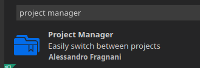
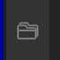
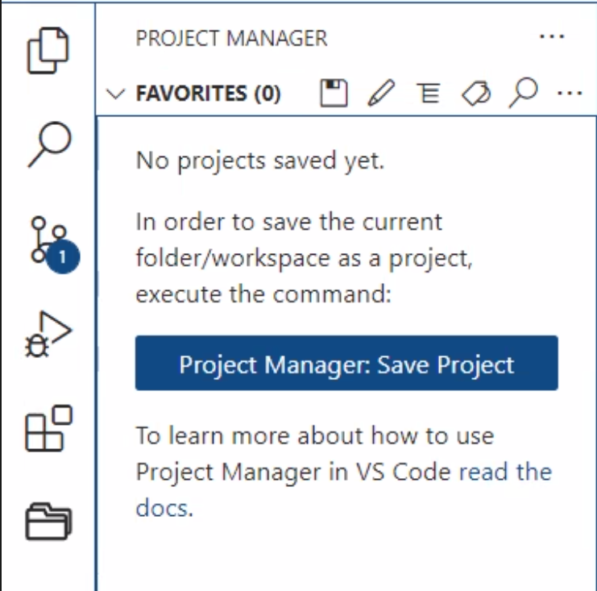
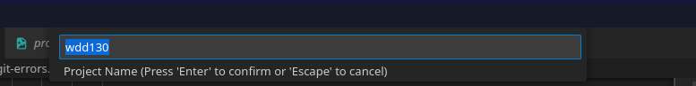
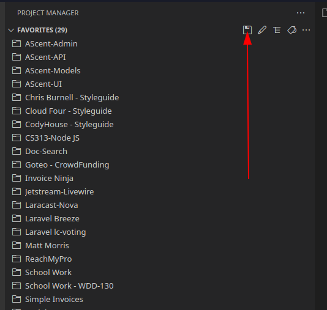

Users with multiple coding projects/classes Usuários com múltiplos projetos/aulas de programação Usuarios con múltiples proyectos/clases de programación
It is recommended that if you are doing multiple coding projects at a time and each has its own folder/directory structure, you install an extension called Project Manager É recomendado que, se você estiver trabalhando em múltiplos projetos de programação ao mesmo tempo e cada um tiver sua própria estrutura de pasta/diretório, você instale uma extensão chamada Project Manager Se recomienda que, si está trabajando en múltiples proyectos de programación al mismo tiempo y cada uno tiene su propia estructura de carpeta/directorio, instale una extensión llamada Project Manager
Go to extensions Vá para extensões Vaya a extensiones
Search for Project Manager Pesquise por Project Manager Busque Project Manager

Click Install. Clique em Install. Haga clic en Install.
Once installed open one project folder in VSCode Depois de instalado, abra uma pasta de projeto no VSCode Una vez instalado, abra una carpeta de proyecto en VSCode
Click on the Project Manager icon in the icons on the left or right of the editor Clique no ícone do Project Manager nos ícones à esquerda ou à direita do editor Haga clic en el ícono del Project Manager en los íconos a la izquierda o derecha del editor

You should see a blue button that states: Project Manager: Save Project - Click that button and you will be prompted for a name at the top center of the screen. The default name is the folder name. Você deve ver um botão azul que diz: Project Manager: Save Project - Clique nesse botão e será solicitado que você dê um nome no centro superior da tela. O nome padrão é o nome da pasta. Debería ver un botón azul que dice: Project Manager: Save Project - Haga clic en ese botón y se le solicitará un nombre en la parte superior central de la pantalla. El nombre predeterminado es el nombre de la carpeta.

You will be prompted to give the project a name Você será solicitado a dar um nome ao projeto Se le solicitará que le dé un nombre al proyecto

That will then add that project name to the Project Manager list of projects. Isso então adicionará esse nome de projeto à lista de projetos do Project Manager. Eso agregará ese nombre de proyecto a la lista de proyectos del Project Manager.
Open the second project folder in its own workspace. Abra a segunda pasta de projeto em seu próprio workspace. Abra la segunda carpeta de proyecto en su propio workspace.
Click the Save icon in the Project Manager folder icon area. Clique no ícone de Save na área de ícones da pasta do Project Manager. Haga clic en el ícono de Save en el área de íconos de carpeta del Project Manager.

Give your project a name and hit enter. This will add it to the list. Dê um nome ao seu projeto e pressione Enter. Isso o adicionará à lista. Dé un nombre a su proyecto y presione Enter. Esto lo agregará a la lista.
If you click the edit icon, it will open the JSON file that lists your projects. The format is quite easy to follow. The rule is that each project must be enclosed with { } and must have a comma between the project section. Se você clicar no ícone de editar, ele abrirá o arquivo JSON que lista seus projetos. O formato é bastante fácil de seguir. A regra é que cada projeto deve estar entre { } e deve ter uma vírgula entre as seções de projeto. Si hace clic en el ícono de editar, se abrirá el archivo JSON que lista sus proyectos. El formato es bastante fácil de seguir. La regla es que cada proyecto debe estar entre { } y debe tener una coma entre las secciones de proyecto.
- Name is the name of the project Name é o nome do projeto Name es el nombre del proyecto
- Rootpath is the path to the project. Rootpath é o caminho para o projeto. Rootpath es la ruta hacia el proyecto.
- Paths is not used at this time Paths não é utilizado neste momento Paths no se utiliza en este momento
- Tags is a way to categorize the type of project for sorting. This list is up to the person Tags é uma forma de categorizar o tipo de projeto para ordenação. Esta lista fica a critério do usuário Tags es una forma de categorizar el tipo de proyecto para ordenación. Esta lista queda a criterio del usuario
- Enabled is if the project will display or not in the list of projects. This is a way to only show projects you are currently working on. Enabled define se o projeto será exibido ou não na lista de projetos. Esta é uma forma de mostrar apenas os projetos em que você está trabalhando atualmente. Enabled define si el proyecto se mostrará o no en la lista de proyectos. Esta es una forma de mostrar solo los proyectos en los que está trabajando actualmente.
This is the format of the JSON File Este é o formato do arquivo JSON Este es el formato del archivo JSON
{
"name": "WDD-130",
"rootPath": "/var/www/html/school/wdd130",
"paths": [],
"tags": ["School", "WDD-130"],
"enabled": true
},